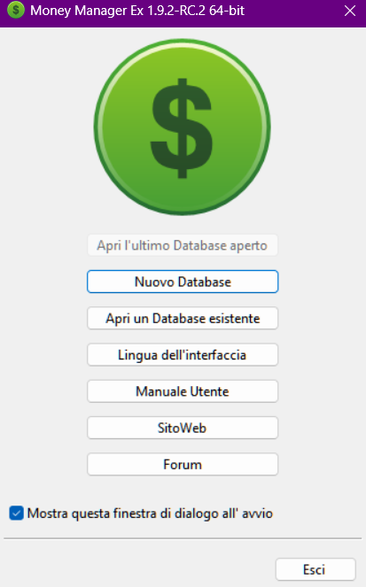
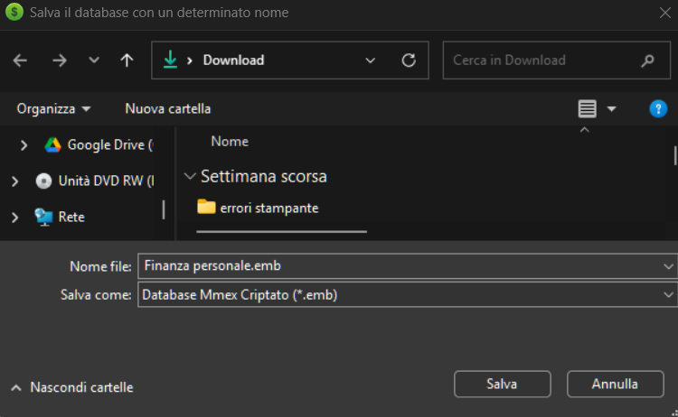
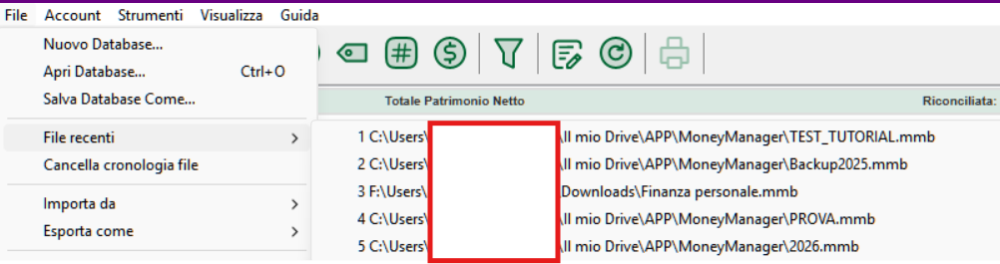
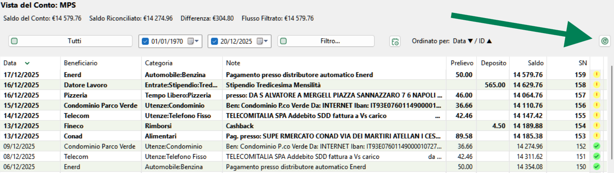
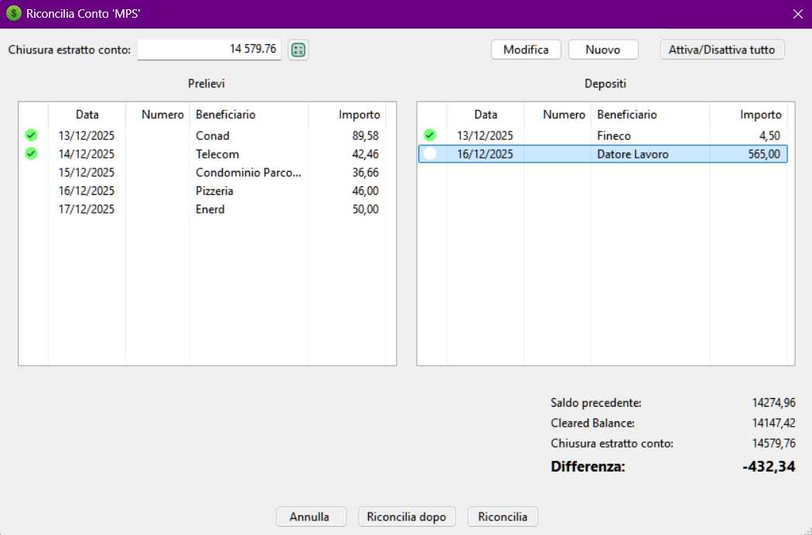
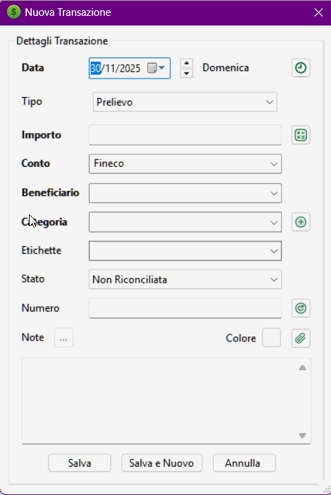
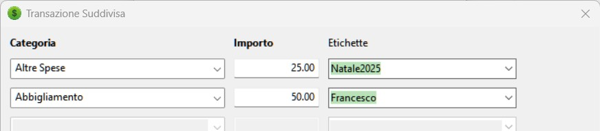
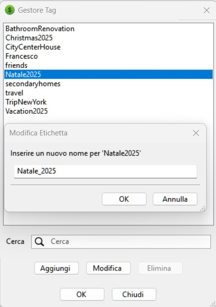
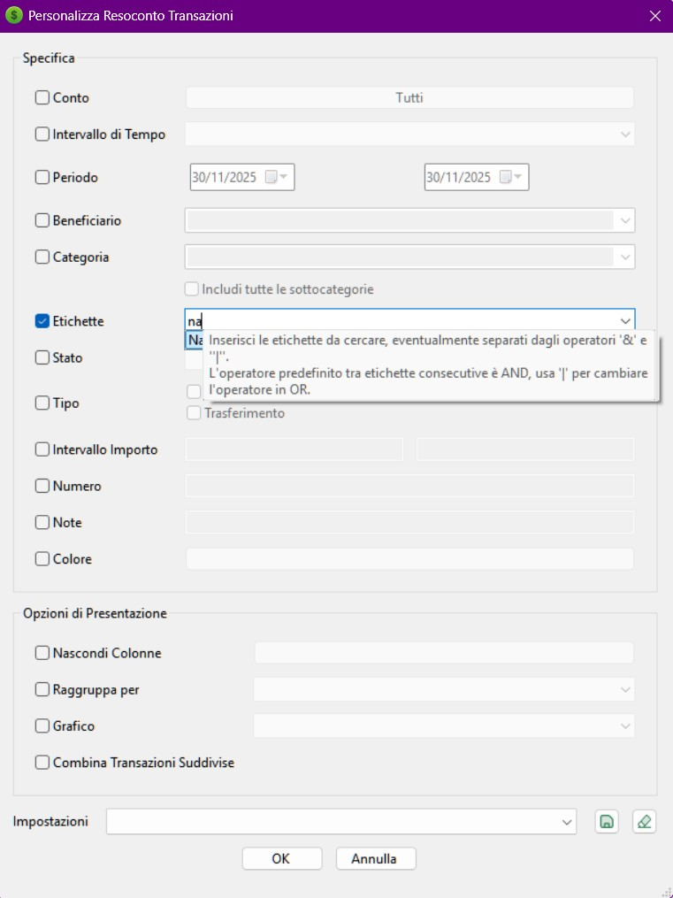

Money Manager Ex (MMEX) è un software libero e open-source, multipiattaforma e facile da usare, dedicato alla gestione delle finanze personali. Aiuta a organizzare le proprie finanze e a tenere traccia dei flussi di cassa e delle abitudini di spesa.
MMEX include tutte le funzionalità di base che la grande maggioranza degli utenti si aspetta da un’applicazione di gestione finanziaria personale. I suoi obiettivi di progettazione sono la semplicità e la facilità d’uso: un programma pensato per essere utilizzato quotidianamente.
MMEX è un sistema di gestione finanziaria pensato per chiunque voglia tenere traccia di denaro, valute, cespiti patrimoniali e abitudini di spesa. Basato su principi semplici, permette anche a chi ha poche o nessuna conoscenza in ambito finanziario o contabile di gestire con successo le proprie finanze. MMEX riproduce il mondo finanziario reale per aiutare l’utente a mantenere sotto controllo le proprie finanze personali. Il software Money Manager Ex è gratuito ed open-source.
L’obiettivo principale di MMEX è semplificare il processo di monitoraggio delle informazioni finanziarie, attraverso un programma facile da usare e utilizzabile con la frequenza necessaria, per aiutare a comprendere da dove provengono i propri soldi e, soprattutto, dove vengono spesi, così da poter prendere decisioni finanziarie più consapevoli.
Money Manager Ex può essere immaginato come un libro contabile elettronico, che consente di verificare i saldi dei conti e di organizzare, gestire e generare resoconti sulle proprie finanze.
MMEX aiuta inoltre a tenere sotto controllo il proprio valore finanziario complessivo e l’andamento del patrimonio nel tempo.
Lo scopo di questo manuale è fornire al lettore alcune istruzioni di base per l’utilizzo di MMEX. Questo manuale evolverà insieme al programma: per questo è consigliabile consultare la documentazione ad ogni aggiornamento, per scoprire le novità e imparare a sfruttare al meglio le funzionalità di MMEX.
Organizzarsi finanziariamente richiede una certa quantità di disciplina. La gestione finanziaria può diventare complicata quando non c’è una chiara comprensione di quanto denaro stiamo ricevendo, considerato come entrata, rispetto alle spese, ovvero a quanto denaro spendiamo.
L’indebitamento di solito si verifica quando il nostro flusso di cassa è limitato perché le spese superano le entrate. In questi casi siamo costretti a prendere in prestito denaro per mantenere il flusso di cassa necessario all’acquisto dei beni essenziali.
Il primo passo verso una migliore salute finanziaria è mantenere registri finanziari accurati e aggiornati. Solo quando abbiamo una chiara comprensione di dove va il nostro denaro possiamo prendere decisioni consapevoli su dove ridurre le spese nei periodi di difficoltà. E, se dobbiamo ricorrere al credito, saremo anche in grado di gestire meglio i nostri debiti.
Ti sei accorto di aver speso 600 € per acquistare film in DVD l’anno scorso? Quante volte li hai guardati? Non pensi che quei 600 € sarebbero stati più utili per coprire l’imprevisto capitato ieri alla tua auto? Non esiste una risposta giusta o sbagliata su come spendere i propri soldi: dopotutto sei tu ad averli guadagnati e hai tutto il diritto di usarli come preferisci. Tuttavia, è sempre possibile far lavorare il proprio denaro in modo più efficiente e ottenere il massimo da ogni euro speso.
È qui che entra in gioco un software per la gestione delle finanze personali. Questo tipo di strumenti consente di organizzare ed esaminare i dati finanziari, offrendo una migliore visibilità di ciò che accade. Ricorda sempre che un software è valido solo quanto i dati che gli vengono forniti: dati errati producono risultati errati. Ma se hai già iniziato a pensare di utilizzare un software di contabilità personale, sei già sulla buona strada per dare più valore a ogni singolo euro.
Proseguiamo ora per vedere come lavorare con Money Manager Ex.
Money Manager Ex riproduce il mondo reale per aiutare gli utenti a gestire le proprie finanze personali.
Nella vita di tutti i giorni riceviamo generalmente denaro da qualcuno in cambio di servizi offerti o prodotti venduti. In MMEX questo viene considerato come un’Entrata o un Deposito. Quando acquistiamo beni o usufruiamo di un servizio, il denaro che spendiamo viene considerato come un’Uscita o un Prelievo. In MMEX le persone o le organizzazioni che ci forniscono denaro o ricevono il nostro denaro sono definite Beneficiari.
Poiché normalmente non spendiamo tutto il denaro che riceviamo, abbiamo bisogno di un luogo in cui conservarlo. Questo può essere un istituto finanziario, più istituti diversi o semplicemente il contante nel nostro portafoglio. MMEX identifica questi luoghi come Conti.
Ogni volta che spendiamo o riceviamo denaro, registriamo una Transazione, mentre il motivo dell’entrata o dell’uscita è rappresentato dalla Categoria. In alcune situazioni è necessario trasferire denaro da un luogo a un altro, ad esempio quando si effettua un prelievo da uno sportello automatico (dal conto bancario al contante). Questo tipo di operazione viene definito Trasferimento.
Questa situazione può essere semplificata come mostrato nello schema seguente:

Un altro aspetto importante da considerare è la valuta utilizzata per effettuare le transazioni.
Con tutti questi elementi da tenere sotto controllo, MMEX utilizza un database per memorizzare e collegare tra loro tutte queste informazioni.
Il database generato da MMEX, noto come file .mmb,
diventa un file importante da proteggere.
In base alle proprie esigenze, è possibile utilizzare la crittografia
come misura di sicurezza, ottenendo un database crittografato
.emb.
In questo caso, al database viene associata una password che sarà richiesta
ogni volta che MMEX viene avviato.
Come per qualsiasi sistema informatico, i dati che produciamo sono fondamentali e devono essere protetti da eventuali malfunzionamenti. MMEX include un sistema di backup in grado di creare automaticamente copie datate del database all’apertura e/o quando vengono rilevate modifiche. Per ogni database vengono mantenute fino a quattro copie di backup.
.mmb o .emb.In MMEX tutte le informazioni finanziarie (Conti, Transazioni, Categorie, Valute, Etichette, Allegati, Impostazioni e altro) risiedono all’interno di un Database. Questo capitolo spiega come creare un nuovo database, come gestirlo, come usare la crittografia, come aprirlo su altri dispositivi e come effettuare backup affidabili.
Un database MMEX è un file SQLite e può avere due estensioni:
.mmb – formato standard, non criptato;.emb – formato criptato e protetto da password.MMEX può gestire più database: personale, famiglia, lavoro, test, ecc. Il nome del file aperto è sempre visibile nella barra del titolo del programma.
Per creare un nuovo database seleziona:
File → Nuovo Database…
Verrà chiesto di indicare:
Finanze.mmb).Una volta salvato il file, si aprirà la Creazione guidata Database.
La procedura guidata richiede due informazioni fondamentali:

In seguito è sempre possibile modificare questi parametri tramite:
Strumenti → Impostazioni…
I file .mmb sono database SQLite non protetti.
Sono leggibili da qualsiasi installazione MMEX e anche da strumenti esterni.
I file .emb applicano crittografia AES e richiedono una password per essere aperti.
Sono la scelta più sicura quando il database va salvato in cloud, trasferito o usato su dispositivi condivisi.
Per convertire un database esistente in un file criptato:
File → Salva Database Come…
Seleziona Encrypted Database (.emb).
Apri il file criptato, inserisci la password, quindi salva con:
File → Salva Database Come…
I file .mmb e .emb non sono legati al computer su cui sono stati creati:
puoi copiarli e aprirli ovunque.
| Problema | Causa | Soluzione |
|---|---|---|
| Password rifiutata | Maiuscole/Minuscole o tastiera errata | Controllare layout tastiera e Caps Lock |
| File corrotto | Interruzione durante il salvataggio | Ripristinare un backup |
| Versione non compatibile | MMEX troppo vecchio | Aggiornare all’ultima versione |
| Caratteristica | .mmb | .emb |
|---|---|---|
| Sicurezza | Bassa | Alta (criptato) |
| Password richiesta | No | Sì |
| Prestazioni | Leggermente più veloce | Piccolo overhead |
| Accesso da strumenti esterni | Possibile (SQLite) | Impossibile |
Puoi passare rapidamente tra i database recenti usando:
File → File recenti…

MMEX genera copie di sicurezza (file .bak) per proteggere i tuoi dati da errori,
arresti inattesi, file corrotti o problemi di compatibilità con versioni precedenti.

Le impostazioni si trovano in:
Strumenti → Impostazioni → Altro
Le impostazioni disponibili sono:
Il nome del file di backup si basa sempre sul nome del database principale
(nomefile.mmb).
A questo nome MMEX aggiunge automaticamente un suffisso che indica quando è stato creato il backup:
nomefile_start_YYYY-MM-DD.baknomefile_update_YYYY-MM-DD.bakDurante la stessa giornata, MMEX può generare al massimo:
nomefile_start_YYYY-MM-DD.bak (backup all’avvio);nomefile_update_YYYY-MM-DD.bak (backup alla chiusura).Una volta creato un backup per quel giorno, MMEX non lo sovrascrive e non lo aggiorna. Se vengono apportate ulteriori modifiche al database:
.mmb),.bak già creato rimane immutato,
I file .bak sono copie statiche del database così com’era al momento della loro creazione.
Non vengono mai modificati da MMEX.
.bak.nomefile.mmb per evitare conflitti, ad esempio:Last_nomefile.mmb
nomefile_start_YYYY-MM-DD.bak o nomefile_update_YYYY-MM-DD.baknomefile.mmb
Se apri un backup molto datato, MMEX applicherà automaticamente tutte le transazioni pianificate scadute tra quella data e oggi, alterando lo stato originale.
MMEX non può bloccare in sola lettura un file, ma il sistema operativo sì.
| Problema | Causa | Soluzione |
|---|---|---|
| Nessun file .bak generato | Backup disattivi o assenza di modifiche | Controlla le impostazioni in Strumenti → Impostazioni → Altro |
| Nomi molto lunghi | Apertura di file .bak come database principale |
Utilizzare sempre il file .mmb come database attivo |
| Troppi file .bak | Valore “Max Files” troppo alto | Ridurre il numero massimo o eliminare i backup vecchi |
Quando si crea un nuovo file di database, vi verrà automaticamente chiesto di creare un nuovo conto.
Per creare manualmente un nuovo conto, dal Menu, selezionare Conti → Nuovo conto.
Questo visualizzerà la procedura guidata Aggiungi Conto. La procedura guidata vi assisterà nella raccolta delle informazioni importanti del Nome e il tipo di Conto. Il tipo di Account non è modificabile, ma il nome può essere cambiato durante la modifica delle informazioni relative all'account.
Nome del conto: questo è un campo obbligatorio. La raccomandazione è di denominare il vostro conto in modo univoco e legato alla
realtà del conto. Esempio: con CityBank, abbiamo un conto di risparmio
e una carta di credito Visa. Potresti chiamare i tuoi conti come CitiBank risparmio
e Citibank Visa
.
Tipo di Conti: MMEX supporta diversi tipi di Conti.
Per impostare correttamente i conti, è necessario avere informazioni sul saldo per i conti che vuoi aggiungere a MMEX. Puoi ottenere queste informazioni dai tuoi estratti conto più recenti della banca, degli investimenti e delle carte di credito. Per monitorare ulteriori informazioni su questo conto, opzionalmente puoi inserire i dettagli del tuo conto come Numero di conto Detenuto presso, Sito web, Informazioni di contatto e Informazioni di accesso. È possibile inserire delle note aggiuntive sul conto nel campo delle note.
Gran parte dei conti hanno una sorta di saldo al loro interno, ad esempio, in un conto della carta di credito, hai un saldo corrente di $2304,67, potresti mettere quel valore nel campo del saldo iniziale. Procedendo, dovrai solo aggiungere transazioni oltre quella data quando avevi il bilancio.
Lo Stato del Conto è impostabile su Aperto o Chiuso. I conti chiusi sono semplicemente chiusi. Non sono più attivi. Impostare questo stato è solo un modo per disordinare la tua vista nel pannello di navigazione della vista ad albero. Le impostazioni permanenti sono effettuate cambiando le impostazioni della Vista sul Menu, Strumenti → impostazioni, puoi nascondere i conti chiusi. Vedi i Suggerimenti sull'Albero di Navigazione.
Valuta: Questa è inizialmente impostata alla Valuta di Base del database che è stata impostata inizialmente durante la sua creazione. Puoi impostare la valuta che è associata a questo conto e può essere diversa da quella di base.
Il tasso di cambio per la valuta è modificabile usando il menu: Strumenti → Organizza >Valuta.
Esempio: Vivi negli USA usando i Dollari US e hai un conto bancario italiano che usa l'Euro. Gran parte dei tuoi conti sono in USD. Qual è il reale valore del tuo conto bancario italiano? Cambiando il tasso di cambio per l'Euro italiano, puoi ottenere il valore corretto dei tuoi conti.
Puoi anche contrassegnare i conti come Conto Preferito>. Questo, ancora, è usato per modificare i conti visibili nella barra di navigazione. Vedi Suggerimenti sull'Albero di Navigazione.
Abbiamo un conto di risparmio con $1250, un conto corrente con $500, una MasterCard da £250, una Carta Visa con $475, un mutuo immobiliare di $230,965 e un fondo d'istruzione per mandare i figli all'università in futuro correntemente a $5000 con interessi.
Impostiamo i seguenti conti:
| Tipo di conto | Nome del conto | Saldo iniziale |
|---|---|---|
| Assegno/risparmio | Risparmi | $1.250,00 |
| Controlla | $500.00 | |
| MasterCard | -$250.00 | |
| Visa Card | -$475.00 | |
| Conto Deposito a Termine | Mutuo casa | -$230,965.00 |
| Fondo per l'educazione | $5,000.00 |
Sulla Pagina Home, i bilanci sarebbero $1025 per i conti Bancari e a $-225,965 per i Conti a Termine
Quando un pagamento è effettuato dal tuo Conto di Risparmio alla tua MasterCard con una Transazione di Trasferimento, il bilancio sulla pagina home rimane uguale. Quando è effettuato un pagamento dai tuoi risparmi al tuo mutuo immobiliare, il bilancio sulla home page rifletterà il pagamento. Ora puoi determinare l'importo di denaro che hai su base giornaliera. I pagamenti regolari, inoltre, sono configurabili dal tuo conto di risparmio al conto del tuo mutuo usando le Transazioni Ricorrenti.
Una volta creato un conto, puoi modificare ogni informazione del conto nei seguenti modi:
Questo farà comparire la finestra di informazioni del conto dove sono modificabili i campi richiesti.
Modifica i dettagli del conto, poi usa il pulsante OK per salvare le informazioni del conto.
Una volta creato un nuovo conto, e selezionato quello richiesto il conto dall'albero di navigazione o dalla pagina iniziale, al conto visualizzato si possono aggiungere transazioni come segue:
Quando si inserisce una nuova transazione, viene visualizzata una finestra di dialogo. Utilizza questa finestra per inserire i seguenti dettagli:
La modifica delle transazioni esistenti è eseguibile in diversi modi:
Tutte queste azioni apriranno la finestra di dialogo della transazione contenente i dettagli della transazione selezionata. Apporta le modifiche e clicca OK per salvare le modifiche.
Le transazioni sono filtrabili dai filtri fissi o usando il Filtro della Transazione nella Vista del Conto. Questo consentirà all'utente di limitare le transazioni visibili a quelle definite dal filtro appropriato. Queste transazioni filtrate sono facilmente selezionabili e modificabili individualmente.
Queste transazioni visibili sono inoltre eliminabili in massa se desiderato.
Per una riconciliazione pratica e veloce, MMEX mette a disposizione una finestra di dialogo dedicata alla riconciliazione.
È possibile aprirla dal menu contestuale del conto nel Navigatore facendo clic con il tasto destro:

In alternativa, è possibile aprirla direttamente dalla vista del conto tramite l’apposito pulsante:

La finestra mostra tutte le transazioni in sospeso fino alla data corrente, ordinate in due colonne separate per Prelievi e Depositi:

In MMEX; le transazioni riconciliate e non riconciliate sono indicate da icone differenti. Quando i dettagli bancari non sono controllati rispetto alla dichiarazione di una banca, l'utente può selezionarli per impostare il valore predefinito a Riconciliata creando le transazioni nelle impostazioni.
Alcune transazioni potrebbero avere alcuni problemi che desideri seguire. Contrassegnale con lo stato di flag per proseguimento. Questo è indicato in MMEX con un'icona differente.
L'utente può specificare 7 colori personalizzati nella sezione colori della finestra delle impostazioni. Ne pannello di controllo/termine, premere Ctrl+1 tramite Ctrl+7 imposta il colore della voce della transazioni al colore personalizzato specificato dall'utnete. Premere Ctrl+0 lo modificherà nuovamente al colore della transazione predefinito di mmex.
In MMEX una transazione ha già campi standard (Data, Beneficiario, Categoria, Importo, Note, ecc.). Nella vita reale però spesso servono informazioni che non hanno un posto naturale in questi campi: un ID pratica, un metodo di pagamento, un codice interno, un progetto, un contratto, una scadenza, una classificazione “a tag”, un saldo banca riportato nel CSV, oppure il tipo transazione usato dalla banca (DD, CHQ, BGC…). I Campi personalizzati servono proprio a questo: trasformano colonne “informali” in dati coerenti, così puoi importarli, filtrarli, mostrarli in colonne e usarli nei resoconti.
Molti utenti importano anni di storico da altri software o da esportazioni bancarie/Excel. Questi file contengono spesso colonne extra (tag, commenti, “transaction type”, riferimenti, saldo, flag personalizzati) che sono utilissime per analisi e riconciliazioni, ma che MMEX non può “indovinare” dentro i campi standard senza perdere informazione o mescolare significati (per esempio mettere un “Transaction Type” dentro Categoria è un compromesso che limita l’analisi). I Campi personalizzati sono stati introdotti per:
Prima di creare decine di campi, conviene fissare 3 concetti:
Nel Gestore Campo Personalizzato definisci, modifichi e rimuovi i campi. Ogni definizione include tipicamente:
La scelta del tipo non è estetica: determina cosa MMEX considera valido, come importa i valori da CSV/XML, e quanto sarà affidabile filtrare/riportare quei dati.
PRAT-\d{4}-\d{4} obbliga valori tipo PRAT-2025-0142.
;).
È il modo più vicino a una vera funzione “Tag”, ma con vocabolario controllato.
I Campi personalizzati sono utili ogni volta che vuoi separare la contabilità (Categorie, conti, trasferimenti) dalla classificazione operativa (progetti, persone, metodi, codici, riconciliazioni). Ecco scenari tipici:
Le categorie descrivono “cosa hai comprato” (Spesa, Carburante, Bollette). Il metodo descrive “come hai pagato”. Creando un campo “Metodo pagamento” (Scelta singola) puoi poi filtrare: “quanto ho speso con il bancomat negli ultimi 3 mesi?” senza sporcare le categorie.
Se segui lavori/progetti (anche personali: “Ristrutturazione”, “Viaggio 2026”, “Bambini”), puoi creare un campo “Progetto” e usarlo come “dimensione parallela” alle categorie. Esempio: Categoria = “Casa:Materiali”, Progetto = “Ristrutturazione bagno”. Così hai sia analisi per categoria, sia analisi per progetto.
Se importi da app/banche che hanno colonne extra (tag, commenti, tipo banca, saldo giornaliero), i Campi Personalizzati sono il modo corretto di portare tutto in MMEX senza comprimere informazioni nelle Note. È esattamente uno dei motivi per cui questa funzione è considerata “potente”: ti permette migrazioni fedeli e verificabili.
Con campi Data/Booleano puoi costruire un sistema semplice per segnare scadenze: “Fine garanzia” e “Rinnovato (Sì/No)”. Anche se MMEX non è un gestionale, questo aiuta a filtrare e trovare transazioni/documenti collegati.
Quando esiste almeno un campo definito per le transazioni, nella finestra Nuova/Modifica transazione compare una sezione (tipicamente espandibile) dedicata ai Campi Personalizzati. Qui inserisci i valori per quella transazione.
Se vuoi “vedere subito” i valori senza aprire ogni transazione, puoi collegare fino a 5 campi personalizzati
alle colonne speciali UDFC01…UDFC05. Questo trasforma il campo in una colonna visibile nel conto.
Nella finestra di import CSV (e, in modo analogo, in XML), MMEX mostra l’elenco dei campi assegnabili.
Dopo i campi standard trovi anche i Campi personalizzati, identificati tipicamente come voci del tipo
UDF: FIELDID accanto alla descrizione del campo.
In questo modo puoi mappare qualunque colonna extra del tuo CSV su un campo personalizzato esistente.
Procedura consigliata (robusta e ripetibile):
Quando esporti in CSV/XML, il comportamento dipende dalla versione e dal tipo di export scelto. In generale, se lo scopo è “trasferire dati” da un MMEX a un altro o fare backup interoperabile, conviene verificare che l’export includa anche i campi personalizzati e fare sempre un test su un file piccolo.
I Campi personalizzati possono entrare in gioco in tre modi principali:
Per utenti avanzati (o per chi vuole un manuale “professionale”): i valori dei Campi Personalizzati sono salvati in una tabella dedicata e collegati alle transazioni tramite l’ID della transazione (REFID). Questo rende possibile creare resoconti SQL che estraggono e aggregano anche i campi personalizzati.
SELECT
a.TRANSDATE,
a.TRANSAMOUNT,
p.PAYEENAME,
c.CONTENT AS CustomValue
FROM CHECKINGACCOUNT_V1 a
LEFT JOIN PAYEE_V1 p ON p.PAYEEID = a.PAYEEID
LEFT JOIN CUSTOMFIELDDATA_V1 c ON c.REFID = a.TRANSID
WHERE c.CONTENT = 'Carta'
ORDER BY a.TRANSDATE;Un flusso robusto (soprattutto per import storici) è:
MMEX è utilizzabile in molti paesi, MMEX deve considerare la valuta in uso per il paese. Creando un nuovo database, la Valuta di Base è impostata alla valuta usata nel paese dell'utente. Se l'impostazione della valuta dell'utente non è elencata nelle valute predefinite, l'utente può creare il proprio Listino di valute.
MMEX ci consente di operare con più di una valuta. Ogni conto ha la propria impostazione di valuta e sarà predefinito alla valuta di base. Quando impostiamo conti con valute differenti, le transazioni che creiamo in questi conti rifletteranno la valuta del conto.
Puoi gestire le Valute usando l'elemento del menu Strumenti → Organizza Valuta.
Aggiungi una nuova Valuta:
Quando oltre una valuta è usata, la Conversione al Tasso di Base dev'esser impostata. Questo consentirà al valore della valuta di riflettere propriamente il valore al tasso di base.
Per consentire l'aggiornamento della Valuta Automatico il Simbolo della Valuta dev'esser impostato per la valuta particolare in uso.
Le categorie indicano il motivo per cui è fatta una spesa o un'entrata è ricevuta.
Una Categoria è generalmente usata per registrare Entrate o Spese. Poiché MMEX ci consente di trasferire denaro tra i conti, si consiglia anche di usare le categorie per registrare i trasferimenti. Questo ci consentirà di determinare che denaro è in trasferimento per un motivo specifico, come un rimborso di un prestito. Questo non sarà considerato come un'entrata o una spesa nel quadro generale. Usare la stessa categoria per un'entrata e una spesa sconvolgerà le cifre del bilancio.
Esempio: Se vuoi registrare il valore di un'auto in funzione, configureremmo quanto segue:
Le prime 4 sottocategorie sono usate per registrare le spese. Se siamo rimborsati per i costi del carburante per qualsiasi motivo, dovremo usare Carburante Rimborsato come sottocategoria d'Entrata. Questo ci consentirebbe poi di determinare l'importo corretto che stiamo spendendo in carburante per operare l'auto. Questo diverrà più chiaro usando i Budget.
Aggiungendo una nuova transazione, possiamo usare oltre una categoria per registrare una transazione. Questa è nota come categoria divisa.
La transazione complessiva della categoria divisa è un prelievo o un deposito. Sebbene le categorie entro la divisione debbano riflettere il tipo complessivo della transazione, ogni categoria è classificabile come un prelievo o deposito entro la divisione.
Le categorie divise sono facilmente visualizzabili per una transazione usando la selezione di un menu popup quando una voce della categoria divisa esiste.
Puoi gestire le Categorie usando l'elemento del menu: Strumenti → Organizza Categorie. Una volta che la finestra della categoria si apre, puoi aggiungere nuove categorie e sotto-categorie.
Per Aggiungere una Nuova Categoria:
Per Aggiungere una Nuova Sotto-Categoria:
Puoi anche modificare i nomi selezionando la categoria/sottocategoria nell'elenco, modificando il nome nella casella di testo e poi usando il pulsante Modifica. Usa un'azione simile per eliminare la categoria/sottocategoria nell'elenco.
Assicurati che nessuna transazioni usi questa combinazione di categoria/sottocategoria. Questo è eseguibile:
Questo renderebbe la categoria liberà così da esser eliminabile.
I beneficiari sono le persone o istituzioni che ci danno denaro, o le persone o istituzioni che paghiamo per i nostri beni e servizi.
Puoi gestire i Beneficiari usando l'elemento del menu: Strumenti → Organizza Beneficiari.
Una volta aperta la finestra del beneficiario, puoi aggiungerne di nuovi, modificarne o eliminarne di esistenti.
Per aggiungere un nuovo Beneficiario:
Puoi anche selezionare il beneficiario nell'elenco, poi usare il pulsante Modifica o Elimina per eseguire l'azione richiesta.
Per eliminare un beneficiario, assicurati che nessuna transazione lo utilizzi. Questo si può fare:
Questo renderebbe il beneficiario libero così da esser eliminabile.
Le Etichette (o Tags) sono uno strumento avanzato di classificazione che permette di aggiungere informazioni contestuali alle transazioni, indipendentemente dalla loro Categoria, dal Conto o dal Beneficiario. Mentre le Categorie descrivono la natura della spesa o dell’entrata, le Etichette descrivono il contesto, il progetto, la persona, l’evento o lo scopo della transazione.
Le Etichette sono state introdotte per permettere una classificazione più flessibile rispetto alle Categorie. Una Categoria definisce “che tipo” di transazione è stata effettuata; una Etichetta definisce “per quale scopo” o “in quale contesto” quella transazione è stata fatta.
Sono utili in particolare quando:
Le Etichette permettono quindi di analizzare le transazioni da più punti di vista senza complicare la struttura delle categorie.
Il campo Etichette è presente nella finestra “Nuova/Modifica Transazione”. Qui è possibile:

Le Etichette funzionano anche nelle transazioni suddivise (split).

Tutte le Etichette possono essere visualizzate e modificate tramite:
Strumenti → Gestore Etichette…

Da questa finestra è possibile:
Per garantire corretto funzionamento nei report, nel database e nei filtri, i nomi delle Etichette devono rispettare alcune regole fondamentali:
_): Viaggio_New_York[ ] { } ( ) % $ # @ ! ? *).
Il Resoconto Transazioni consente di filtrare le transazioni utilizzando le Etichette.
Resoconti → Transazioni

Tipi di filtro disponibili:
Hotel, taxi, ristoranti → Etichetta: Vacanze2025
Materiali, manodopera, permessi → Etichetta: RistrutturazioneBagno
Alimentari, bollette, trasporti → Etichetta: Marco, Angela
Utenze, manutenzioni, IMU → Etichetta: CasaCentro
MMEX ha una WebApp leggera installabile su ogni webserver PHP come NAS, hosting condiviso o altra installazione locale di PHP.
Puoi scaricare tutti i file necessari dalla pagina del progetto WebApp.
Per avviare WebApp devi solo:
htaccess.txt in .htaccess (su Windows devi farlo da CMD e tramite il comando rename)
PDO_SQLite se necessarioPoi apri semplicemente il tuo browser all'URL della cartella, compilare prima le impostazioni e inserire l'URL corretto e GUID nelle impostazioni di MMEX (scheda importazione/esportazione).
Ora a ogni avvio MMEX contatterà la WebApp per scaricare e importare le nuove transazioni nel database desktop.
Tutte le impostazioni collegate delle transazioni principali saranno sincronizzate automaticamente alla WebApp così che potrai avere il tuo profilo e tutti i tuoi beneficiari pronti all'uso inserendo la nuova transazione.
Il Formato di Interscambio Accelerato (QIF) è una specifica aperta alla lettura e scrittura di dati finanziari ai multimedia (es. file). Un file QIF ha tipicamente la struttura seguente:
!Type:type identifier string [single character line code]Literal String Data ... ^ [single character line code]Literal String Data ... ^
Ogni registro termina con un ^ (segno d'omissione).
Vedi l'esempio di transazione QIF:
!Tipo:Intestazione Bancaria
D6/ 1/94 Data
T-1,000.00 Importo
N1005 numero
PBanca del Beneficiario del Mutuo
^ Fine della transazione
QIF è meno recente dello Scambio Finanziario Aperto (OFX). L'incapacità di riconciliare le transazioni importate contro le informazioni del conto attuale è una delle principali carenze del QIF. Comunemente è supportato dalle istituzioni finanziarie per fornire informazioni scaricabili ai titolari dei conti.
MMEX può importare le transazioni da tipi specifici di formati QIF in un conto (puoi trovare il tipo di QIF aprendolo in un editor testuale)
Dopo aver importato da QIF, tutte le transazioni dovranno avere un Contrassegno di Proseguimento come proprio stato. Puoi contrassegnare tutte le transazioni con tale flag usando i comandi d'impostazione dello stato di massa usando il menu del click destro nella vista del conto.
Per alleviare il problema di utenti doventi pre-formattare i propri file CSV di transazioni bancarie nel formato fisso richiesto da MMEX, MMEX consente anche agli utenti di importare i file CSV dove l'ordine dei campi è completamente libero.
Per usare questo importatore, seleziona il conto verso cui desideri importare e seleziona l'ordine dei campi nel file CSV selezionando e scegliendo dall'elenco di campi possibili. MMEX importerà ora il file CSV usando le informazioni del formato specificate dall'utente.
MMEX può importare un'ampia varietà di formati. Uno di essi è un file CSV a formato fisso. Questo formato del file corrisponde esattamente al formato CSV esportabile da MMEX. Quindi, può esser utile spostare i dati da un file del database .mmb a un altro file del database .mmb. Per vedere facilmente il formato del file CSV, puoi provare a esportare un conto a un file CSV e poi analizzare il formato creato.
Le impostazioni del campo CSV sono le seguenti:
Creando il tuo file CSV, assicurati di rimuovere le virgole dai tuoi depositi e prelievi. Questo è facilmente eseguibile tramite un programma come Excel od OpenOffice Calc.
Dopo l'importazione da QIF, tutte le transazioni dovranno avere un Contrassegno di Proseguimento come proprio stato. Puoi contrassegnare tutte le transazioni con tale flag usando i comandi d'impostazione dello stato di massa usando il menu del click destro nella vista del conto.
Quando importi CSV che contengono colonne aggiuntive (come metodo di pagamento, riferimenti, codici progetto o tipi transazione della banca), è consigliabile usare i Campi personalizzati per conservare queste informazioni come dati strutturati invece di inserirle nelle Note.
Importare da XML per riconoscere il file XML in formato Excel denominato Foglio di Calcolo XML 2003
in Excel. Questo è il metodo d'importazione consigliato se richiesto per importare le transazioni da Excel.
Il metodo d'importazione e la selezione del campo è uguale all'importazione da CSV.
MMEX può esportare a un file CSCX a formato fisso. Questo formato del file corrisponde esattamente al formato CSV importabile da MMEX. Quindi può esser utile per spostare dati da un file del database .mmb a un altro file del database .mmb. Per vedere facilmente il formato del file CSV, puoi provare a esportare un conto a un file CSV e poi analizzare il formato creato.
Il formato generale è come segue:
MMEX può esportare a un file XML. Il formato XML è conforme con Excel e può esser letto da esso. Il formato generale è lo stesso del CSV.
MMEX può esportare un conto in un file del formato QIF. Questo formato è anche utilizzabile da MMEX per ricaricare in un conto.
Le Transazioni Ricorrenti sono transazioni speciali che configuriamo per inserire la transazione nella banca dati in una data futura. Queste transazioni si verificano generalmente a intervalli regolari, come il pagamento di una bolletta.
Queste transazioni:
Le Transazioni Ricorrenti sono accessibili dall'albero di navigazione o dall'elemento del menu Strumenti → Transazioni Ricorrenti. Questo mostrerà la pagina delle Transazioni Ricorrenti.
Per creare una transazione nuova, usa il pulsante Nuova:
MMEX ti consente di monitorare Titoli e Azioni. I Titoli totali sono aggiunti al tuo valore finanziario totale.
Ulteriori dettagli fanno riferimento a Titoli, Azioni e Gestione dei Dividendi Azionari in MMEX
MMEX ti consente di monitorare cespiti come auto, case, terreni e altro. Ogni cespite può avere il proprio valore apprezzato da un certo tasso annuo, deprezzamento di un certo tasso annuo, o nessuna modifica in valore.
I cespiti totali sono aggiunti al tuo valore finanziario totale.
I Cespiti sono accessibili tramite Strumenti → Cespiti o tramite il Menu di Navigazione.
Gli asset sono creati nella finestra di Gestione delle Cespiti.
Le transazioni di cespiti sono aggiunte a un cespite e collegate a un conto.
MMEX consente una varietà di Resoconti. Seleziona il rapporto appropriato sotto il nodo dei Resoconti nell'albero di navigazione. Alcuni Resoconti richiedono inserimenti dell'utente, altri no.
Questi Resoconti generalmente non iniziano all'inizio dell'anno del calendario, e si presentano come rami dei titoli principali del rapporto.
Questi Resoconti coprono:
La data iniziale è modificabile dall'utente per iniziare in qualsiasi giorno di qualsiasi mese, entro un periodo di 12 mesi usando il menu Strumenti → impostazioni → Generali.
Questo consente all'utente di generare Resoconti specifici basati sui criteri selezionati dall'utente.
Un Rapporto di Transazione è generalmente usato per individuare transazioni specifiche effettuate nei conti di tipo Bancario o di Termine. Questo rapporto è anche utilizzabile per mostrare dettagli specifici per un conto particolare.
Per un Rapporto di Transazione, l'elenco di transazioni risultante è stampabile o salvabile come file HTML.
Se utilizzi i Campi personalizzati, questi possono essere sfruttati anche nei filtri e nei resoconti (in base alla versione), oppure in modo avanzato tramite resoconti SQL nel General Report Manager.
Poiché una transazione di trasferimento è un prelievo da un conto e un deposito a un altro, un rapporto di transazione effettuato su più conti perde il punto di riferimento per determinare se la transazione sia un deposito o un prelievo.
Quando un rapporto di transazione è usato per un conto specifico, genererà un rapporto corrispondente ai dettagli del conto. Il punto di riferimento per i trasferimenti è noto per questo rapporto e si rifletterà nella visualizzazione dei bilanci corretti nel rapporto.
Questo rapporto prevede l'importo di fondi disponibile, basato sugli impegni futuri.
Il rapporto userà le Transazioni Ricorrenti per vari conti e si rifletterà in avanti di 10 anni su base mensile. Questo diviene una predizione dell'importo di denaro che potrebbe esser disponibile ogni mese in base ai pagamenti correnti.
MMEX supporta la stampa di tutti i Resoconti visualizzabili.
Una volta visualizzato un rapporto, puoi stamparlo usando il menu File → Stampa….
Puoi modificare dei comportamenti in esecuzione di MMEX modificando le impostazioni nella Finestra delle Impostazioni.
Accedi dal menu con Strumenti → Impostazioni.
Puoi contribuire:
Originariamente ho sviluppato un software finanziario personale chiamato Money Manager. Era scritto in .NET ed era più un esercizio d'apprendimento che un software sviluppato seriamente. È cresciuto ben oltre il design originale. Il software fu congelato e iniziò il lavoro su una nuova versione con un'interfaccia utente e funzionalità simili, ma scritto in C++.
Solitamente, Microsoft denomina le seconde versioni delle API del proprio software migliorato con un'estensione Ex come in doSomething() e doSomethingEx(). Quindi ho semplicemente seguito il modello, aggiungendo un 'Ex' alla fine.
.mmb è un formato proprietario?No, il file .mmb non è proprietario.
MMEX usa database SQLite per memorizzare i dati dell'utente. Ciò significa che il file .mmb è un database SQLite regolare.
SQLite è uno dei più piccoli sistemi di database relazionali gratuiti in circolazione e ci sono molti strumenti per aprire e accedere ai database di SQLite. SQLiteSpy e
SQLite Browser
sono due di questi. Una volta aperto il database usando questi strumenti, puoi fare tutto ciò che vuoi con i dati.
Sì. I tuoi dati sono completamente al sicuro.
I dati sono contenuti sul tuo PC, (o chiavetta USB se li hai resi portatili). Per proteggere ulteriormente i tuoi dati, può esser aggiunta la crittografia. Ciò applica una password al file del tuo database, e può esser aperto solo da MMEX o ogni altro software, se hai la password corretta.
Si.
MMEX è un applicazione portatile, il che significa capacità d'esecuzione
senza installazione, ad esempio, da un'unità flash USB. Se MMEX
trova mmexini.db3 nella sua cartella, presume la modalità
portatile. Copia i file di mmex alla Chiavetta USB e copia i tuoi
mmexini.db3 nella cartella di mmex su quell'unità.
Per rendere MMEX portatile:
F:\ è un'unità flash USB)
C:\Program Files\MoneyManagerEx in
F:\%APPDATA%\MoneyManagerEx\mmexini.db3 in
F:\MoneyManagerExF:\/media/disk sia un'unità flash USB montata)
make install prefix=/media/disk cp ~/.mmex/mmexini.db3 /media/disk/mmex/share/mmex
/usr:
cp /usr/bin/mmex /media/disk/mmex/bin cp /usr/share/mmex /media/disk/mmex/share cp /usr/share/doc/mmex /media/disk/mmex/share/doc cp ~/.mmex/mmexini.db3 /media/disk/mmex/share/mmex
Generalmente, con qualsiasi programma sorgente chiuso, devi dipendere dalla parola del venditore per quanto riguarda la sicurezza dei dati. Ma poiché MMEX è open source, puoi verificare da solo questa affermazione.
Anche se non sei un esperto di C++, si può essere certi che chiunque può accedere al codice sorgente in qualsiasi momento e verificare la legittimità delle intenzioni di MMEX.
MMEX si connette a internet solo per inviare statistiche anonime di utilizzo o durante il controllo di un aggiornamento. Ecco un esempio di dati che MMEX invierà:
| Versione | Sistema operativo | Lingua | Paese | Risoluzione | Tempo Inizio | Tempo fine |
|---|---|---|---|---|---|---|
| 1.3.0 Portatile | Windows 8 (build 9200), edizione 64-bit | inglese | Stati uniti | 1366x768 | 2014-05-01 09:00:00 | 2014-05-01 09:01:30 |
Per stampare un estratto conto con transazioni da qualsiasi insieme arbitrario di criteri, usa il filtro transazione per selezionare le transazioni che vuoi e quindi fai una stampa dal menu File → Stampa….
Il filtro transazione è accessibile da Reports
→ Resoconti transazione sull'albero di navigazione,
o dai pulsanti di navigazione rapida nell'angolo in alto a sinistra di MMEX.